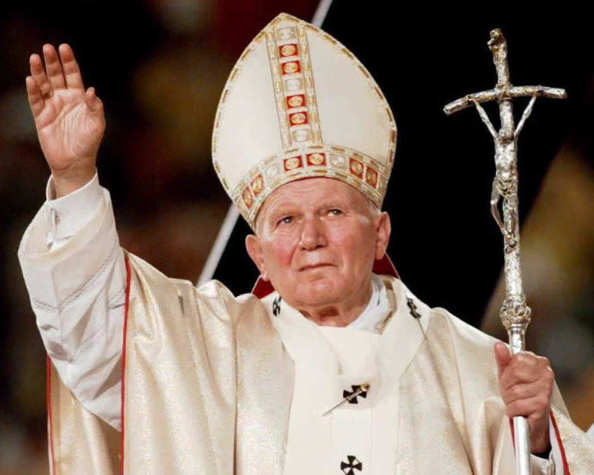
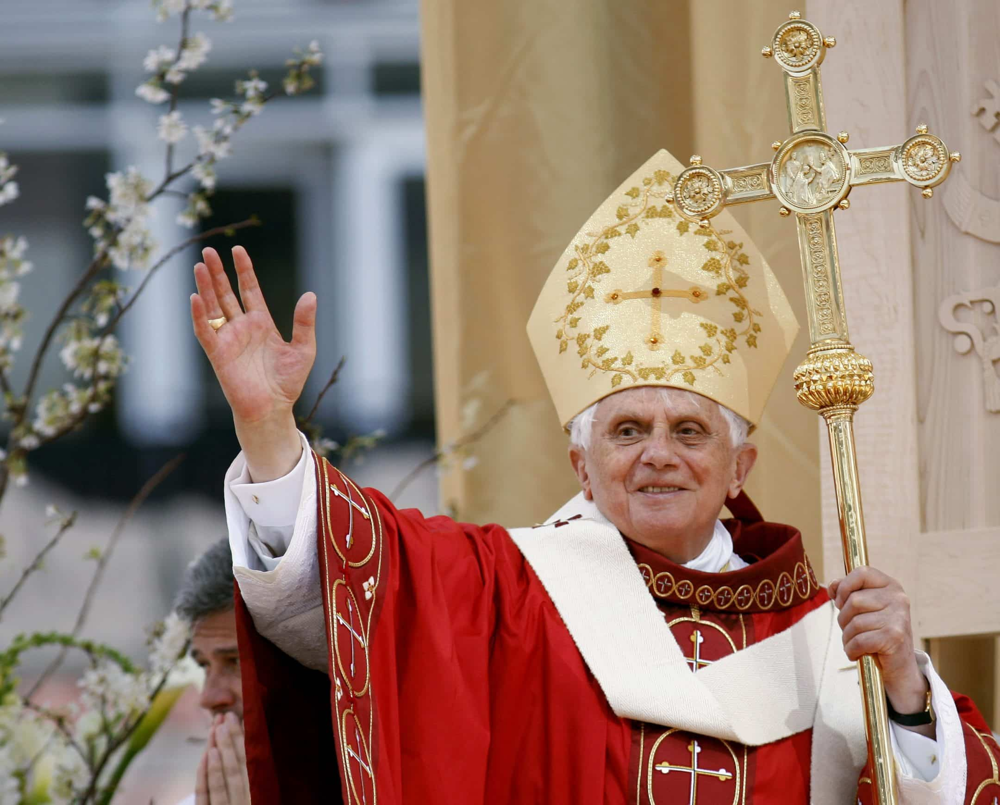
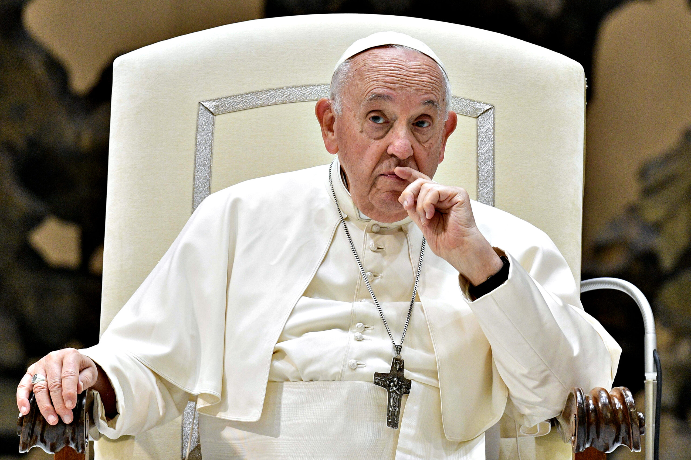
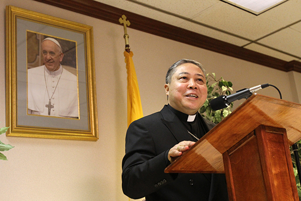

Connection to Catholic Social Teaching
The issue of human trafficking is addressed by the CST principle of dignity of the human person. This principle says that all people, no matter who they are, possess inherent value and dignity, because they are made in the image of God.
Nothing can take away this dignity. It is given freely to all people, simply because they are.
Human trafficking very clearly goes against this principle because it views other people as objects to be sold, whether for labor or for sexual purposes. It denies the human person their dignity by viewing them as a commodity.
Church Teaching on Human Trafficking
   The Church has issued countless statements on the intrinsic evil of human trafficking. Some examples are listed below:
- The Second Vatican Council stated that "slavery, prostitution, the selling of people, and conditions where workers are treated as mere tools for profit, severely dishonor the Creator.
- The Holy See has released a handbook on combatting human trafficking.
- Pope John Paul II stated that the buying and selling of humans is an affront to shared values across all cultures and peoples, and threatens security of nations.
- Pope Benedict XVI has advocated for the combatting of human trafficking, especially against women.
- Pope Francis has called human trafficking "a scourge against the body of Christ".
- Archbishop Auza, who represents the Holy See at the United Nations, has said that Human Trafficking has deep root causes, but can be eliminated through collectivized action.
The USCCB has also spoke on this topic. In their statement, they call upon the United States and Mexico to work on ending human trafficking together.